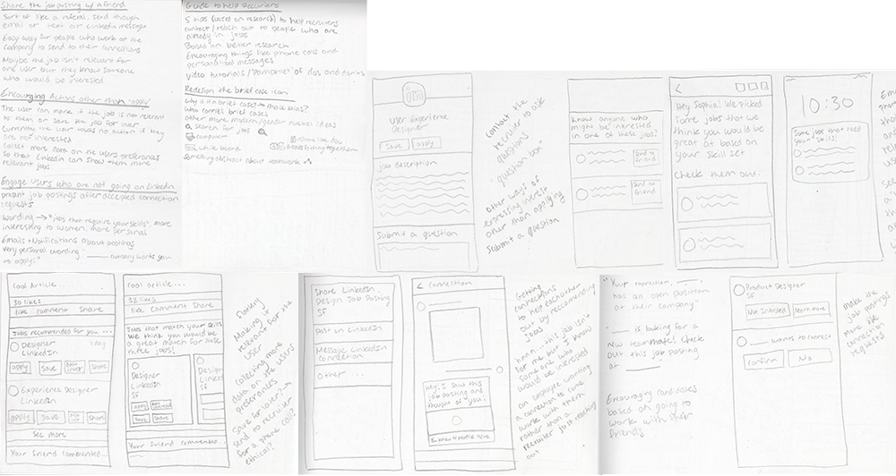
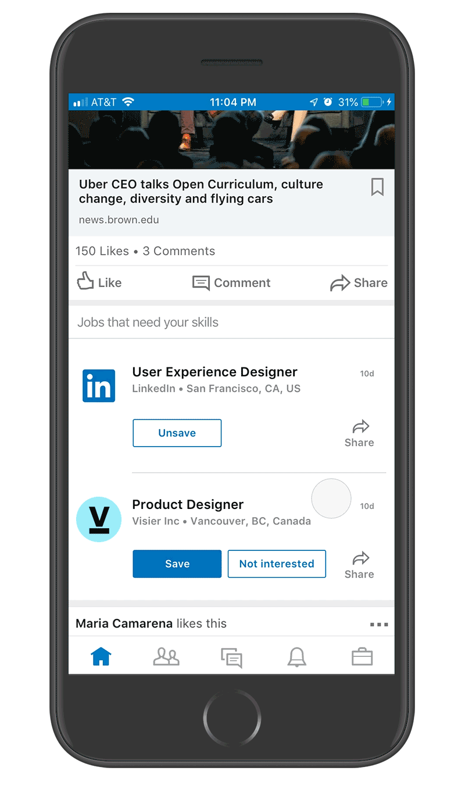
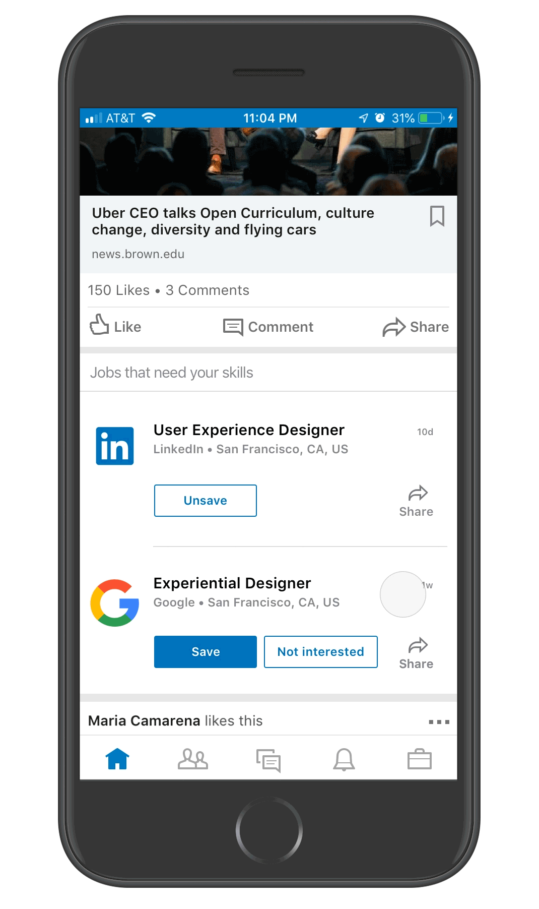
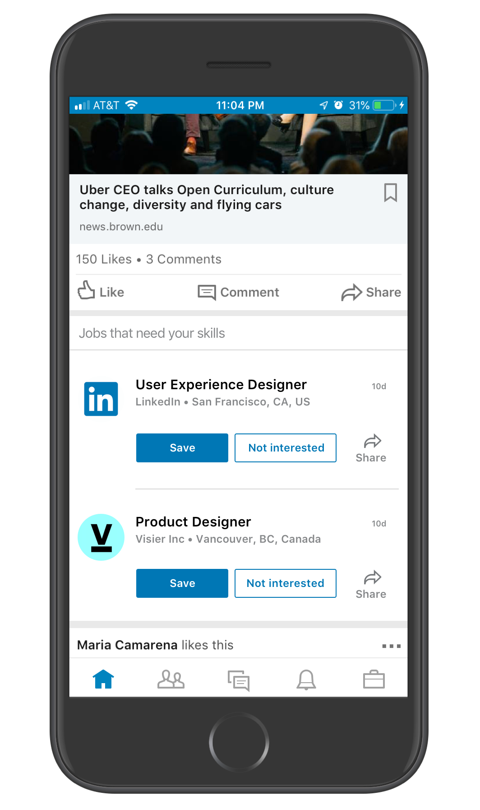
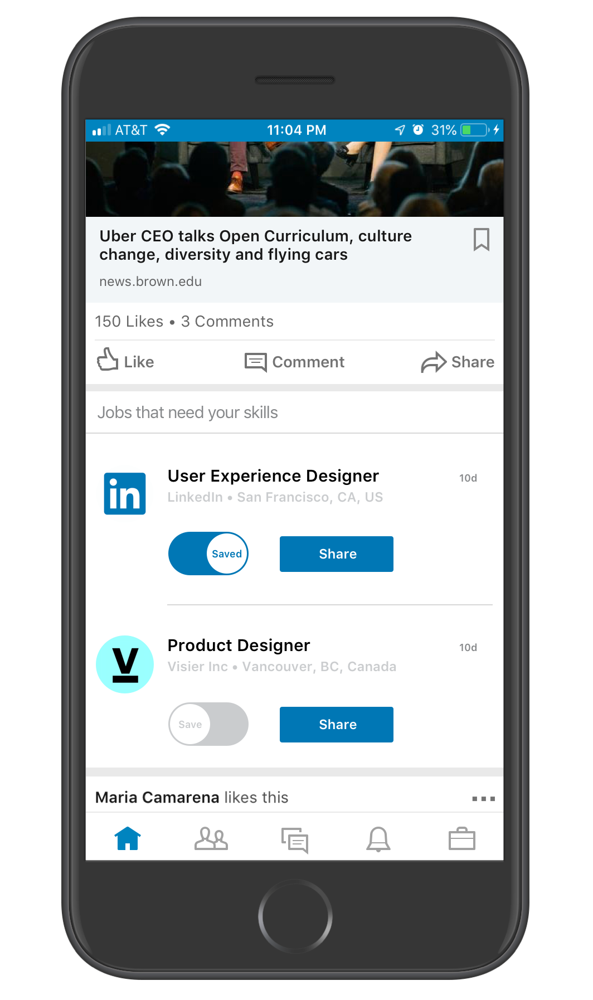
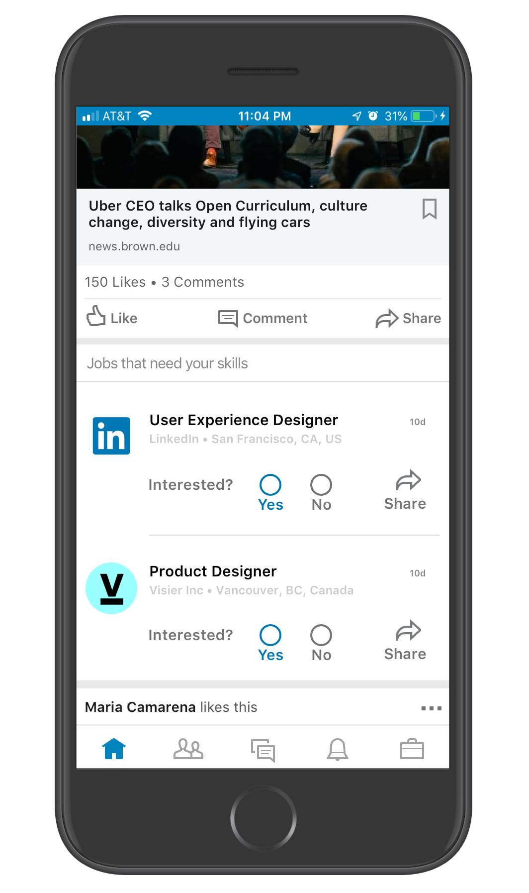
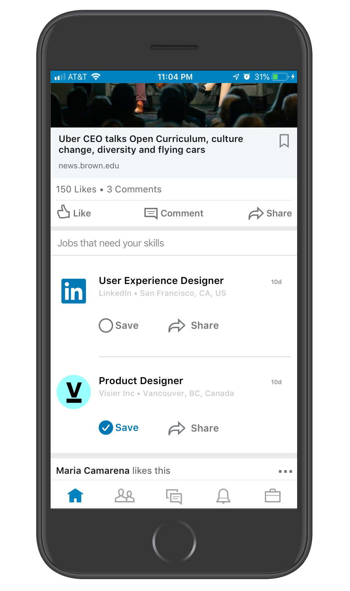

The Ask
Goal: The goal of this exercise is for [LinkedIn] to get a better understanding of your end to end design thought process and execution, starting from initial ideations/sketches/research all the way through to a polished end product. It is also meant to be interpreted however [I] see fit and [LinkedIn] recommends that [I] present [my] work in a clear, concise and visually appealing way.
Introduction: LinkedIn is a network of over 550 million professionals. We use the power of professional networking and profile data to connect individuals with relevant opportunities. Hiring managers and recruiters are frequently interested in people who are already employed or satisfied with their current positions.
Task: Design an experience that presents job opportunities to a passive candidate, who is not actively looking for a new position. Find creative solutions that gains the passive candidate's interest in a new position, and garners a response.
Scope: Please think through the end to end experience, and share your thought process, approach, insights and analysis with us. The final deliverable should be a high-fidelity design comp/comps that demonstrate your interaction and visual design capabilities.
Research
Research Goals: My main research goal is to learn more about the target users: passive candidates, or people who are not actively looking for new jobs. I aim to understand their mindsets and sentiments regarding applying to jobs, how they currently use LinkedIn, their past experiences applying to jobs and what motivates them to apply to jobs or not. I also want to understand what LinkedIn is already doing to present jobs to passive candidates and garner actions.
Interviews: The first thing I did was reach out to some of the target users. Due to the limited time frame and the specific user group, I decided that it would be best to have a few in depth conversations with users about their qualitative usage habits and sentiments rather than put out a survey to collect shorter form data. I asked each interviewee specific questions, but all of the interviews opened up to broader conversations. I talked to people with a variety of experience levels and in a variety of industries. Each interviewee is on LinkedIn and is not “actively looking” for new jobs. I spoke with 6 people.
View a document of notes from the conversations and research questions.
Key Insights:
Phases: Users expressed that they use LinkedIn less when they are not actively apply to jobs and more when they are actively searching for new jobs.
Curiosity: Users expressed curiosity to know “what was out there” or how their skills can be applied to different jobs that they don’t already know about. Even though these users aren’t actively looking for new jobs, they are still curious.
Connection: If the passive candidate has personal connections to employees of a company they will be more likely to apply. If the candidate feels like they have a “human” connection with a recruiter (such as if the recruiter takes the time to call them, makes their message relevant to the specific candidates skills or background, or sends a humorous messages) the passive candidate will be more likely to take the job posting seriously.
Irrelevance: The users are often presented with jobs, but often don’t apply because they feel the job is irrelevant to their interests, they do not have the proper skill set for the job, the location is not a place they want to live or the company is not a company they would like to work for.
Trust: Users chose to apply to jobs based on how clear and trustworthy the recruiter seems, concise descriptions and referrals from colleagues they trust.
Quotes from Interviews:
“Even though I like my job, I am always curious to know what is out there and learn new things. I sometimes wonder how the skills that I have developed in the school that I work in could be applied to other kinds of organizations, like museums or research groups.” (Dean of Faculty, K-8 Private School, 18 years of experience)
“I frequently get sought after by businesses which are wildly irrelevant to anything I’m interested in.” (Wearable Apparel Designer, Fashion Design Company, 6 months of experience)
“I appreciate when the recruiters are honest and straightforward and when the job descriptions are concise. I am also more likely to respond to someone if I see that we have connections in common because I know that the recruiter is sending quality content.” (Head of products, Marketing and Design, Restaurant Technology Company, 21 years experience)
“Once I left my current job, even though I was happy there, because the people from inside of the organization really wanted me to apply and to come work with them. I didn’t apply because of a recruiter, it was because I knew people there.” (Consultant, Non-profit that supports college students, 30 years of experience)
Current LinkedIn Solutions:
I observed that LinkedIn currently presents passive candidates with jobs by:
- Giving the passive candidates information to recruiters who send them LinkedIn messages, emails or phone calls about open jobs
- Presenting job posting in the briefcase section of the platform
- Sending emails and notifications about job postings
- Putting job postings in the news feed (either because of a post by a recruiter or just a posting with an online application)
- Showing if the candidate has a connection that works for the company
- Allowing the candidate to “save” the job and apply later
- Allowing candidates to specify that the job is not interesting to them
- Quick apply
- Providing users with a public place to display their credentials and past experience as well as see what their professional connections are doing in their careers
*I recognize that my research methods were limited. I could have improved my study by talking to more people from a larger variety of backgrounds, from countries outside of the US, in different industries and with different experience levels. I also could have conducted longer and more in depth interviews and also coupled the interviews with quantitative data about how often these users used LinkedIn, how long they have been in their jobs, how satisfied they are in their jobs, their click rates on job postings, how often they receive emails, phone calls or LinkedIn messages from recruiters, how often they apply to jobs, etc.
Personas
I developed two personas based on my research and conversations with passive candidates. When creating the personas I considered: how often the user uses LinkedIn, how open they are to job recommendations and reasons the candidate would be hesitant to apply to a new job.
Orange Persona
- Content at her current job and not actively applying to jobs
- Has not been using LinkedIn very much lately, though she used it more often when she was applying to jobs
- Recently has only gone on LinkedIn because of emails or notifications about connection requests and people viewing her profile
- Busy, and since she is content at her job, applying to new jobs is not a priority
- Doesn't apply to job postings because she does not feel like she has the right skills for the job, she is worried about making a change or she doesn't think she will like the new job
- Open to learning about a variety of different jobs in her industry or jobs in other industries that would require her skill set
- Curious about what jobs are out there, what types of things other organizations in the industry are doing and prioritizing
Blue Persona
- Content at her current job and not actively applying to jobs
- Uses LinkedIn regularly (almost every day or a few times a week) to read industry specific news, read insights from connections and stay up to date on colleagues’ careers
- Has a very specific career direction and would only apply for very specific jobs
- Very picky about what jobs she applies to, the job title and description needs to align very closely to the positions she is interested in and she needs to feel like she has 90% of the required skills for the job
- Doesn’t apply to job postings because she is too busy and because she does not feel like the jobs are relevant enough
- Curious about what jobs are out there, always interested in learning new things and meeting new people
Problem Statement
The Orange Persona is not using LinkedIn very frequently and therefore is not even looking at the LinkedIn job postings. This user needs to first be engaged in LinkedIn, then be presented with job postings, then become curious in a job posting, and then take an action.
The Blue Persona is active on the platform but does not regularly take actions regarding job postings because they are not relevant enough to their interests or skills and because they have little motivation to apply due to their busy schedule and contentment at their current job. This user needs to be engaged with an interface that motivates them to take actions.
Goals
UX Goals
- Present job opportunities to a passive candidate (someone who is not actively looking for a new position)
- Gain the passive candidate's interest or curiosity in the position
- Garner a response
- Make the user curious with out annoying them, sending them too many messages or losing their trust
- Make the experience seamless and easy so that a busy user who is not making job applications a priority does not experience any friction that might deter them
Business Goals
- Provoke more engagement
- Help recruiters find good candidates and get responses so that they continue to see LinkedIn as a valuable tool/investment for recruitment
Ideation
I began brainstorming by writing down some initial ideas and making some quick sketches based on what I learned during my research.
I then organized all of my ideas into 4 different categories.
Wireframes
Concept 1: Job recommendations after connection recommendations
After the user accepts their connection requests, usually suggested connection requests are presented. Job posting suggestions could also appear after the connection suggestions. This design solution would be good for the Orange Persona who does not go on LinkedIn regularly but might go on infrequently to accept connection requests. It would also work for the Blue Persona who goes on regularly.
Concept 2: Highlighting Skills that the user has
A few of the people I interviewed expressed that they often did not apply to jobs because they felt that their skills were not aligned closely enough to the needs of the job. However, this feeling might be caused by insecurity rather than actual lack of skills. In this design solution the user is shown the skills that they have indicated in their profile that align with the skills that the job posting is looking for. This design solution is good for the Orange Persona, who does not apply to jobs because they feel their skills don’t align, even though they might. It is also applicable for the Blue Persona who might not realize that their skills are applicable to a wider variety of jobs.
Concept 3: Statistics about how changing jobs can positively impact someone’s career
In this design iteration, the user is presented with statistics and simple data visualizations that are interesting and relevant to their industry. For example, the statistics could be selected to subtly convince them that changing jobs is a good thing. This is good for the Blue Persona because they are interested in industry specific news as well as the Orange Persona who is afraid to make a change. After showing them these statistics, LinkedIn could remind the user to respond to a message from a recruiter or show them job postings.
Concept 4: Provoking curiosity through wording in emails or notifications
In this concept, LinkedIn sends the passive candidate an email or notification about job postings. The wording of these messages should be specific to this user’s demographic and their interests. Some ideas are: “We think you would be great at these jobs”, “[Your connection] is looking for a new teammate”, “Your classmate is looking for a new teammate”, “Your skills are needed”, “Stay up to date on what’s happening in your industry, check out these recent job postings” and “Jobs that require your skills”. The phrasing of these emails address the reasons that the users I interviewed use Linkedin such as staying up to date with their industry as well as why they do or do not apply to jobs such as knowing someone who works at the company or worrying that they do not have the right skills for the job. This design solution would be best for the Orange Persona who does not use LinkedIn regularly.
Concept 5: Calls to action on recommended jobs
In this concept, the user can effortlessly indicate their interest in the job (by clicking save), their disinterest in the job or share the job with a friend. This design solution would be best for the Blue Persona that is already engaged in LinkedIn and who regularly scrolls through their feed. This user is interested in a very specific type of job, so when they specify that they are not interested in a job, it will help LinkedIn present them with more relevant job postings. The Blue Persona can also easily share the job posting with a colleague (the Orange Persona) who they think might be more interested in the job. I learned in my research that a user is more likely to take a job posting seriously when it comes from someone they trust. If the user saves the job, their information can be given to a recruiter who can send them a personalized outreach. There is no extra commitment of having to read through the entire job application and the user can engage with the post right from their newsfeed.
Concept 6: Calls to action in the job posting preview in a message sent from a recruiter
Similar to the calls to action on the recommended jobs in the news feed, this design solution puts easy buttons on the preview of a job posting that a recruiter might send to a passive candidate. Instead of drafting an entire message back to the recruiter, the user can easily indicate that they are not interested in the job without this preference appearing in the chat. If the user does not indicate their disinterest, then the recruiter can assume that they are at least a little interested and follow up again. The user can also save the job for later, and LinkedIn can send them a follow up message to remind them to get back to the recruiter.
Concept 7: Ask a question about a job posting
In this job posting the “InMail” CTA is prioritized at the beginning of the job post with the “save” and “apply” CTAs. The user might not feel motivated enough to submit an application, but if they are curious about the job they might want to ask a recruiter questions or learn more about the company before submitting their application. This is based of off comments in the interviews were users indicated that they were more likely to apply to a job when they had a human connection with a recruiter or when the recruiter seemed trustworthy.
User Flow
After wire framing these different concepts, I went back to the users who I interviewed to talk to them about which concept they would be most likely to respond to. After these conversations, I decided to focus on the 5th concept with the calls to action on the recommended jobs. This is a user flow for that concept.
Mockups
I mocked up the experience described in the user flow above. I made a few iterations of the UI and animated some of the interactions. The passive candidate can effortlessly indicate their interest in a job posting (by saving it) while scrolling on their newsfeed. The user can easily indicate their disinterest in a job posting so that LinkedIn can use this data to show more relevant postings. The user can also share the job posting with a friend.
This animation is of the full user flow above.
The user can effortlessly indicate their interest in the job. With this information, LinkedIn or a recruiter can follow up with this candidate reminding them to apply.
The user can easily indicate their disinterest in a job posting so that LinkedIn can use this data to show more relevant postings.
 The user can also share the job posting with a friend. During the interviews, I learned that a passive candidate is more likely to take a job posting seriously when it is associated with someone they trust.
   Next Steps
The next step in this design process is to get feedback from other designers (as well as product managers and engineers). My design process is usually very collaborative, and I think the best ideas come from people working together and bouncing ideas of off each other. After receiving feedback on the different concepts I developed in the wireframes section as well as the UI elements in the mockups section, we could user test these designs to see if they will achieve the goals set above. The different UI elements in the mockup section could be AB tested against each other, or the different concepts from the wireframe section could be tested in different combinations. We can also set new goals with quantitative bench marks. For the sake of this short assignment, I made simplified personas based on research that I did myself, but to move this project further I could use actual LinkedIn usage data and LinkedIn’s psychographic models of users. This information would also help dictate how the user test could be run.
Over all, it was fun to work on this short project, learn about how different people use LinkedIn and work within an established visual system.